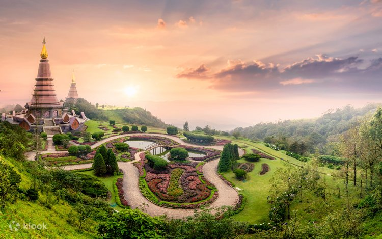
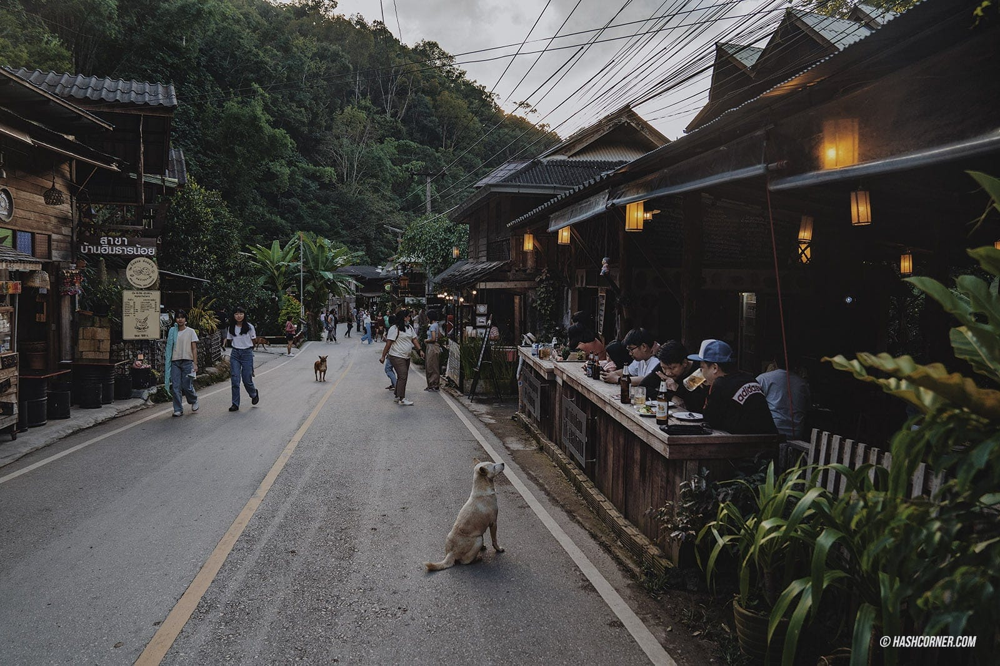

🏔 รีวิวท่องเที่ยวภาคเหนือ
ภาคเหนือของประเทศไทยเป็นภูมิภาคที่มีธรรมชาติสวยงาม อากาศเย็นสบาย และมีเอกลักษณ์ทางวัฒนธรรมที่โดดเด่น ทั้งประเพณี ภาษา อาหาร และวิถีชีวิตของผู้คน จึงเป็นจุดหมายปลายทางยอดนิยมของนักท่องเที่ยวทั้งชาวไทยและชาวต่างชาติ โดยเฉพาะในช่วงฤดูหนาวที่เต็มไปด้วยทะเลหมอก ดอกไม้เมืองหนาว และวิวภูเขาที่สวยงาม
จังหวัดยอดนิยมของภาคเหนือ ได้แก่ เชียงใหม่ เชียงราย น่าน แม่ฮ่องสอน และลำปาง ซึ่งแต่ละจังหวัดมีสถานที่ท่องเที่ยวที่น่าสนใจแตกต่างกันออกไป นักท่องเที่ยวสามารถสัมผัสธรรมชาติ ชมพระอาทิตย์ขึ้น เดินป่า เที่ยววัดโบราณ หรือพักผ่อนในหมู่บ้านที่มีบรรยากาศเงียบสงบ
นอกจากสถานที่ท่องเที่ยวทางธรรมชาติแล้ว ภาคเหนือยังมีชื่อเสียงในเรื่องอาหารพื้นเมือง เช่น ข้าวซอย ไส้อั่ว น้ำพริกหนุ่ม แคบหมู และแกงฮังเล รวมถึงงานหัตถกรรมและสินค้าพื้นเมืองที่สะท้อนภูมิปัญญาของชาวล้านนา นักท่องเที่ยวจึงสามารถเที่ยว ชิมอาหาร และเลือกซื้อของฝากได้ในทริปเดียว
หากใครกำลังมองหาสถานที่พักผ่อนที่เต็มไปด้วยธรรมชาติ อากาศบริสุทธิ์ และวัฒนธรรมที่เป็นเอกลักษณ์ ภาคเหนือถือเป็นอีกหนึ่งจุดหมายที่ไม่ควรพลาด เพราะสามารถเที่ยวได้ตลอดทั้งปี และมีความสวยงามแตกต่างกันในแต่ละฤดูกาล
📍 สถานที่ท่องเที่ยวแนะนำ

ดอยอินทนนท์
ยอดเขาสูงที่สุดของประเทศไทย อากาศเย็นตลอดปี

บ้านแม่กำปอง
หมู่บ้านเล็กกลางหุบเขา เหมาะกับการพักผ่อน
ภูชี้ฟ้า
จุดชมทะเลหมอกและพระอาทิตย์ขึ้นที่มีชื่อเสียง